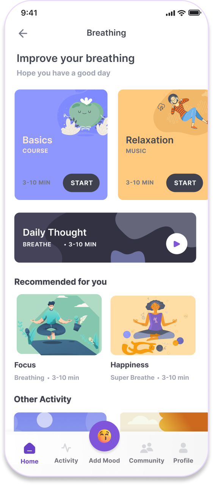
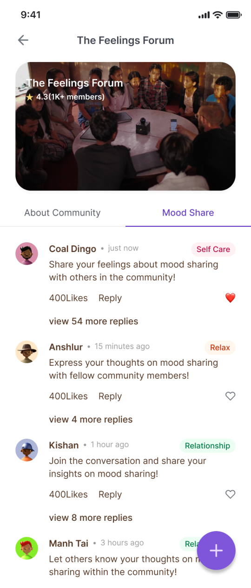
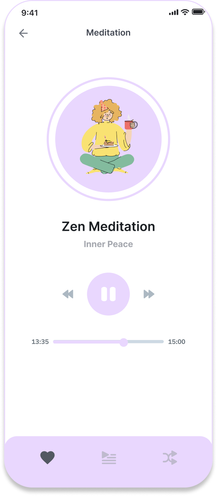
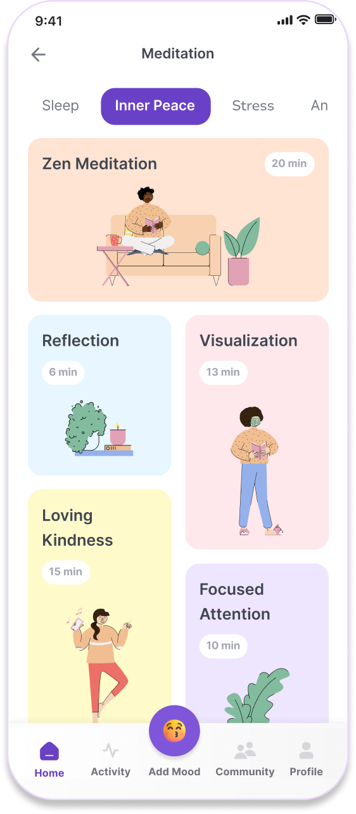
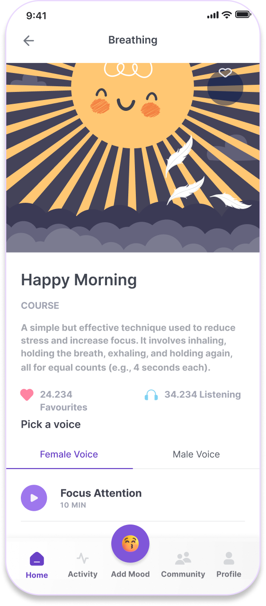
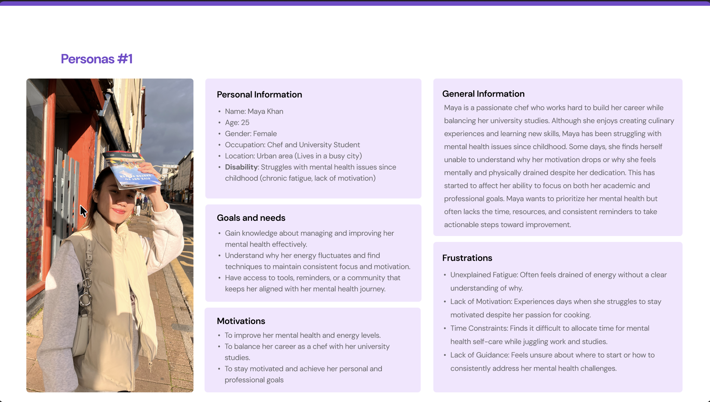
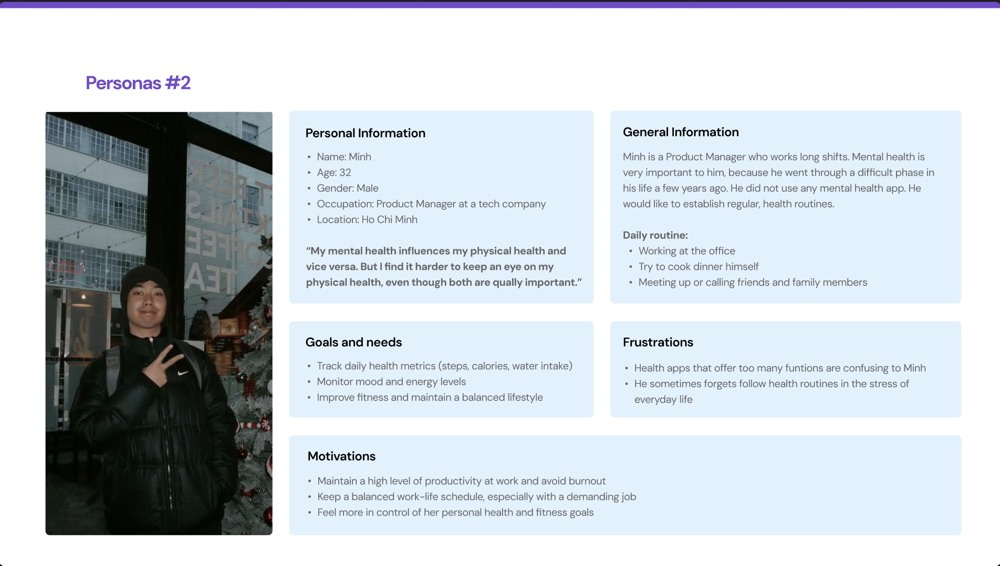
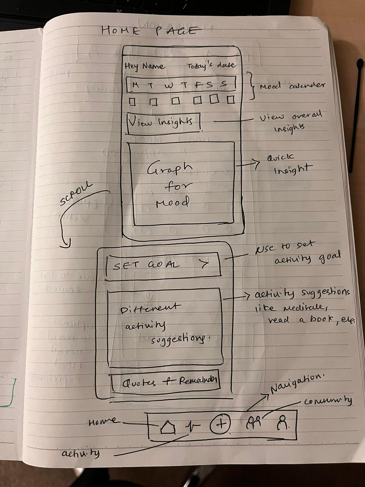
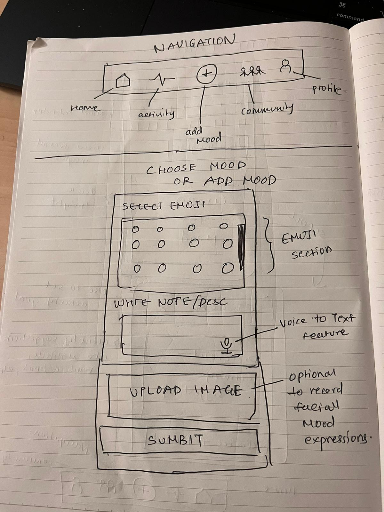

Clear information
People wanted information they could understand and use. This reinforced the need to explain mood patterns clearly.
YourMood explores how young adults can check in with their emotions, make sense of mood patterns and find a useful next step.





Result:
30 survey responses and five interviews informed the prototype. Six usability participants gave an average SUS score of 85/100. Their feedback led me to clarify the mood check-in and activity-creation controls.
Overview
I started YourMood with a question: once someone records how they feel, what would help them decide what to do next?
I led research, product direction, interaction design, prototyping and usability testing. I worked with a developer to review feasibility and carry the design through to implementation.
Context
I focused on adults aged 18–35 who noticed stress or changes in mood but were unsure how to respond. Before defining the product, I explored their reflection habits, what made those habits difficult to sustain and how they chose support.
Research
I began with an anonymous survey to understand how people noticed changes in mood, whether they reflected on them and why wellbeing apps did or did not become part of their routine.
Participants
30 adults aged 18–35 responded:
The sample included regular app users, people who had stopped using wellbeing apps and people who had never tried one.

Survey findings
These responses pointed to a gap between noticing a feeling and making time to reflect. I took two questions into interviews: what made habits difficult to sustain, and what would make reflection feel worth the effort?
Research
I interviewed five people to understand what lay behind the survey responses and what they needed from support.
I asked about:
Trust, cost and choosing support mattered alongside the effort of keeping a reflection habit.
Four themes emerged:
People wanted information they could understand and use. This reinforced the need to explain mood patterns clearly.
Cost and therapist suitability affected choice. Access to professional support needed its own research and design work.
People wanted to know how their information would be used. I kept extra check-in detail optional.
People valued flexible support. I explored self-guided activities and left therapy access for further research.
Research
I reviewed Headspace, DailyBean, MoodShift and BetterHelp to compare their approaches to tracking, content and support. I looked for a useful role YourMood could play.
| Competitor | Strength | Gap in the review | Design implication |
|---|---|---|---|
| Headspace | Guided meditation and educational content | Much of the content required payment | Make the value of support clearer |
| DailyBean | Simple mood logging | Limited guidance after a mood entry | Give mood entries a useful follow-up |
| MoodShift | Tools for emotional reflection | Mood patterns needed clearer explanation | Explain patterns in plain language |
| BetterHelp | Access to online therapy | Therapist suitability and cost were difficult to compare | Make support options easier to compare |
The comparison helped me focus on the connection between recording a mood and choosing what to do next:
Check in → Make sense of a pattern → Choose an activity
Synthesis
I grouped 86 observations and quotes into six clusters, then four themes. This helped me identify recurring needs and decide which problems to address first.
Theme 1: Frequent changes, inconsistent reflection
People often noticed stress or mood changes, but few kept a regular reflection habit.
Theme 2: Effort made habits harder to sustain
Long forms, too many choices and unclear value made wellbeing tools difficult to keep using.
Theme 3: Recording was only a starting point
People wanted to make sense of their entries, rather than simply keep a mood history.
Theme 4: Support had to fit the situation
People preferred different ways of coping depending on their mood, circumstances and available time.
Synthesis
I used two behavioural archetypes to consider how reflection habits and support needs might differ across the experience.


Synthesis
I mapped the journey from noticing a mood change to seeking support, looking for moments when effort or uncertainty interrupted progress.

Product direction
I used four principles to guide feature choices:
Product scope
Structure
I organised the app around three goals: check in, understand patterns and choose support. Other features would help people return to that journey.

Interaction flow
Home → Check in → Emotion and intensity → Optional context → Save → Review a pattern → Choose an activity

Exploration
I compared a single-screen entry, a guided flow and a card-based dashboard. I chose progressive disclosure so people could record the essentials first and add context if useful. Asking for less would make entry easier, but could limit how much the app could explain.


Design decision 1
I had focused on making check-in brief. Testing revealed an earlier obstacle: people needed to find the entry point before they could use the flow.
The plus in the bottom navigation did not clearly suggest mood check-in. Participants had difficulty finding it, although completing the entry was easier once they did.
I added a clear home-screen prompt, changed the navigation icon and explored an introductory hint. These revisions made the purpose of the entry point more explicit.

The extra entry point improves visibility but adds to the home screen. I would test the prompt, icon and introductory hint separately to understand which helps people start.
Design decision 2
The research suggested that keeping a record was only part of the need. People also wanted to understand what their entries might tell them.
The early dashboard showed recent entries, but a chart alone left its meaning open to interpretation. Its data was illustrative.
Pair mood history with a plain-language explanation of the period and measure shown. Describe patterns carefully, without implying a diagnosis or a cause.

A short summary can hide nuance. I would validate the calculations and test how people interpret the chart before connecting it to activity suggestions.
Design decision 3
Activity creation exposed a similar problem. The plus icon left people to work out what the control meant, so I made its purpose explicit.
The unlabelled plus did not consistently communicate activity creation. Participants took different routes to find it.
I added “Create new activity” so the button explained its action. This addressed the ambiguity directly while keeping the control within the activity list.

The label takes more space but reduces the need to interpret an icon. I would test whether people can create an activity from a task prompt that does not name the button.
Prototype
I brought mood entry, reflection and activities into an interactive prototype. I also explored community as a future option. The next step was to test whether people understood the main actions and could find their way through them.
Review the mood entries recorded that day
Illustrative data; chart calculations need validation
Record how you feel at that moment
Read a reply from its notification
See updates from channels and conversations
Browse the available activities
Find out what the session involves
Follow the guided session at your own pace
Usability testing
Six participants completed seven tasks in Maze, followed by discussion over Zoom. I reviewed where they hesitated, how they interpreted labels and which actions were difficult to find.
The average SUS score was 85/100 across six participants. Task observations also revealed unclear controls, which informed decisions 1 and 3. A follow-up test is needed to assess the revisions.
SUS reflects how usable the prototype felt. Some task prompts named interface controls, which may have helped discovery. I would use neutral, goal-based prompts in the next round.
Six participants · prototype usability study
The revised controls still need retesting
YourMood: 85/100
Average SUS: 85/100 from six participants. The revisions still need retesting.

Community remained exploratory: the revision made replies more visible, but comment submission still needs a clearer action and a follow-up test.
Delivery and reflection
I worked with a developer on components, interaction states and implementation. The project taught me to test essential actions before expanding scope. Next, I would focus on check-in, reflection and one activity, then test whether people can find value and return to the journey.